Flowchart notation
A flowchart draws the steps of one function as shapes joined by arrows. You follow the arrows from the start shape to END. COS 110 tests use the flowchart symbols from the first-year course COS 132. Each shape has one job:
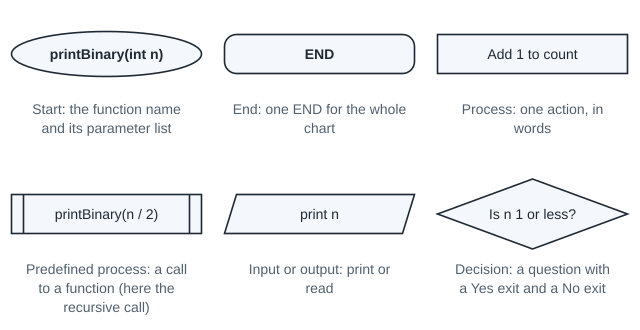
From the Intervention Test (question 2) and Semester Test 1 (figure 3)
The start ellipse gives the function name and its parameter list, written as in C++, for example anonymousFunction(int n) and anonymousConstructor(std::string n, const std::string* source, int count).
From Class Test 1 question 4 and Semester Test 1 question 23
Marks are lost for a whole code segment in one shape, for shapes that hold only code statements, and for the wrong notation.
A short expression inside a shape is fine: the lecturer's own charts have a diamond is n <= 0? and a call anonymousFunction(n-1). The charts on this page say the same things in words, for example "Is n 1 or less?".
Assumed
When the function returns a value, write it in a process box before END, for example "return count". No slide states this rule.
Each kind of C++ statement turns into one shape, or a fixed group of shapes. Read the table from left to right to draw, and from right to left to write code.
| In the code | In the flowchart |
|---|---|
the function header int countAbove(const int* values, int size, int limit) | the start ellipse with the name and the parameter list: countAbove(const int* values, int size, int limit) |
an assignment or a calculation, for example count++; | a process rectangle that says what it does: "add 1 to count" |
if with its condition | a decision diamond with a question, and two exits labelled Yes and No |
a for loop | three parts: "set i to 0", a diamond "Is i less than size?", and "add 1 to i" with an arrow back up to the diamond |
cout << ... or cin >> ... | an input/output parallelogram: "print n" |
| a call to a function, for example the recursive call | a predefined process (a rectangle with a bar at each side) |
return x; | a process rectangle "return x", then END |
A decision is a question that has only two answers, Yes and No. A loop is drawn as an arrow that goes back up to a decision, so the steps repeat while the answer is Yes.
Here is what "a whole code segment in one shape" looks like. This chart puts the whole function into one box:
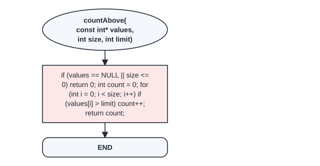
How to draw a flowchart from code
- Draw the start ellipse with the function name and its parameter list, as in the C++ header.
- Go through the code from top to bottom. Give each statement its shape from the table.
- For each
if, draw a diamond with a question. Label one exit Yes and the other No. - For each loop, draw the arrow from the last step of the body back up to the loop diamond. The No exit leaves the loop.
- Write each return value in a process box, then join it to END.
- Check that every path from the start reaches END, and that no shape holds only a code statement or a block of code.
Code to flowchart. countAbove counts the values in an array that are greater than a limit. If the array pointer is NULL or the size is 0 or less, it returns 0.
Four C++ words you need from here on. A pointer holds the address of something in memory; const int* values holds the address of the first value of the array. NULL means the pointer points at nothing. || means "or": the whole test is true when at least one side is true. && means "and": the whole test is true only when both sides are true.
int countAbove(const int* values, int size, int limit) {
if (values == NULL || size <= 0)
return 0;
int count = 0;
for (int i = 0; i < size; i++) {
if (values[i] > limit)
count++;
}
return count;
}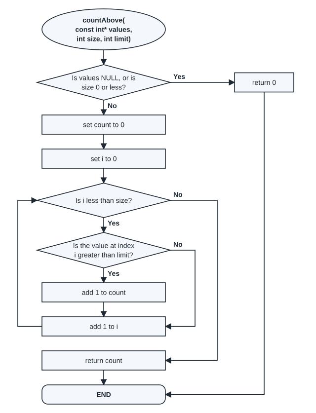
The two if conditions and the loop condition became the three diamonds:
| Condition | True means | False means |
|---|---|---|
values == NULL || size <= 0 | there is nothing to count: return 0 | go on to count |
i < size | index i is inside the array: test one more value | every value was tested: return count |
values[i] > limit | this value counts: add 1 to count | skip it |
The main program makes three calls:
int main() {
int marks[5] = {45, 72, 50, 81, 66};
cout << countAbove(marks, 5, 60) << endl;
cout << countAbove(NULL, 5, 60) << endl;
cout << countAbove(marks, 0, 60) << endl;
return 0;
}Take the first call, countAbove(marks, 5, 60), with the marks 45, 72, 50, 81 and 66. To get the table below, a copy of the function was given extra cout lines that print each step. Such a copy is called an instrumented copy; the table values are what it printed, one row per pass of the loop. Follow the arrows of the chart for each row:
| Pass (i) | Value at index i | Is it greater than 60? | count after the pass |
|---|---|---|---|
| 0 | 45 | No | 0 |
| 1 | 72 | Yes | 1 |
| 2 | 50 | No | 1 |
| 3 | 81 | Yes | 2 |
| 4 | 66 | Yes | 3 |
After the pass with i = 4, i becomes 5. "Is i less than size?" is now No, so the chart goes to "return count".
| Call | Is values NULL, or is size 0 or less? | Path through the chart | Returns |
|---|---|---|---|
countAbove(marks, 5, 60) | No | No: the loop runs 5 times, then "return count" | 3 |
countAbove(NULL, 5, 60) | Yes | Yes: "return 0", then END; the loop is never reached | 0 |
countAbove(marks, 0, 60) | Yes | Yes: "return 0", then END; the loop is never reached | 0 |
This program compiles with g++ -std=c++98 -Wall -Werror; the output shown is what it prints, one line per call:
3 0 0
Flowchart to code. The Intervention Test (question 2, 14 September 2026, not for marks) gave a recursive function as a flowchart and asked for the code (the full question is on the Practice page). A recursive function calls itself, and the call is drawn as a predefined process. This chart prints the binary form of a whole number n:
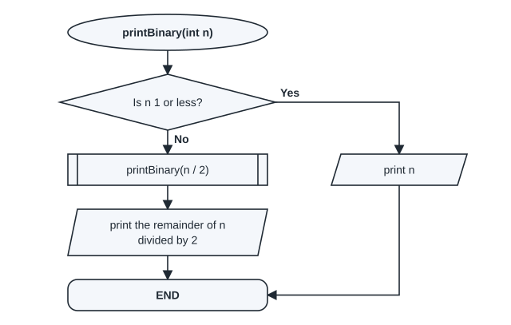
Each shape gives one line. The diamond is the if. The Yes path prints n and ends, so it needs return. On the No path the call comes first and the print comes after it:
void printBinary(int n) {
if (n <= 1) {
cout << n;
return;
}
printBinary(n / 2);
cout << n % 2;
}| Condition | True means | False means |
|---|---|---|
n <= 1 | n is 0 or 1, one binary digit: print it and stop | call printBinary(n / 2) first, then print n % 2 |
The order matters. The inner calls print the left digits first. Then this call prints its own last digit. An instrumented copy of printBinary(6) printed these three calls:
| Call | Is n 1 or less? | What it does |
|---|---|---|
printBinary(6) | No | waits for the call, then prints 0 |
printBinary(3) | No | waits for the call, then prints 1 |
printBinary(1) | Yes | prints 1, then returns |
The digits come out as 1, 1, 0. The program prints the binary forms of 6, 13 and 1:
110 1101 1
Here two lines are swapped. This version prints the remainder first and makes the call after it:
void printBinary(int n) {
if (n <= 1) {
cout << n;
return;
}
cout << n % 2;
printBinary(n / 2);
}Fill in the shape for each numbered line.
| Line | Shape |
|---|---|
void printBinary(int n) { | the start ellipse |
if (n <= 1) { | ____(1)____ |
cout << n; | ____(2)____ |
cout << n % 2; | ____(3)____ |
printBinary(n / 2); | ____(4)____ |
} | END |
Write your answer before you open it.
- a decision diamond: "Is n 1 or less?"
- an output parallelogram: "print n"
- an output parallelogram: "print the remainder of n divided by 2"
- a predefined process: "printBinary(n / 2)"
Draw the whole flowchart of the swapped version, with the arrows and the Yes and No labels. Then follow your chart for printBinary(6) and write what it prints.
Write this before you open the solution.
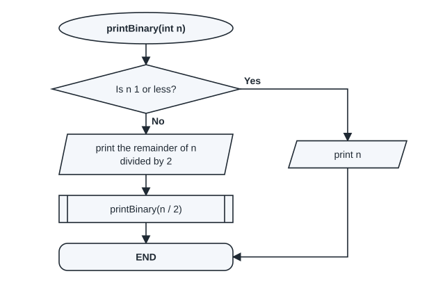
For 6 the chart prints 0, 1, 1: each call prints its last digit before it calls. The program prints the digits backwards:
011 1011 1
Check a flowchart against its code with three questions:
- Is there one diamond for each
ifand each loop, with a question and both Yes and No? - Does each loop have an arrow back up to its diamond, and does the No exit lead to the code after the loop?
- Pick one input. Follow the chart and run the code. Do they print or return the same thing?
Try this
Follow the countAbove flowchart for countAbove(NULL, 5, 60). Which shapes do you pass through, and what is returned?
Write your answer before you open it.
The start, the first diamond (Yes, because values is NULL), "return 0" and END. The loop is never reached. The call returns 0: the second line of the program output is 0.
Flowcharts that follow ownership
Tests ask for the flowchart of a destructor or of the assignment operator operator=. These two functions free memory, so their steps follow ownership: who created an object, and who must delete it.
Two C++ words first. new makes an object (or an array) in memory while the program runs, and gives back its address. delete frees one object made with new; delete[] frees an array made with new. The owner of an object is the object that made it with new and must delete it.
Composition (a filled diamond at the owner) means the owner creates the parts and deletes them. Aggregation (a hollow diamond) means the owner only stores pointers to objects that someone else created, so it never deletes those objects. The pack 3. UML Class Diagrams: Reading, Drawing and Coding has more on reading the diamonds, if you want it.

So the Festival destructor deletes each Stage and the stages array, but only the sponsors array, not the Sponsor objects.
The Festival destructor and its flowchart. The loop runs once for each stage.
Festival::~Festival() {
for (int i = 0; i < numStages; i++)
delete stages[i];
delete[] stages;
delete[] sponsors;
}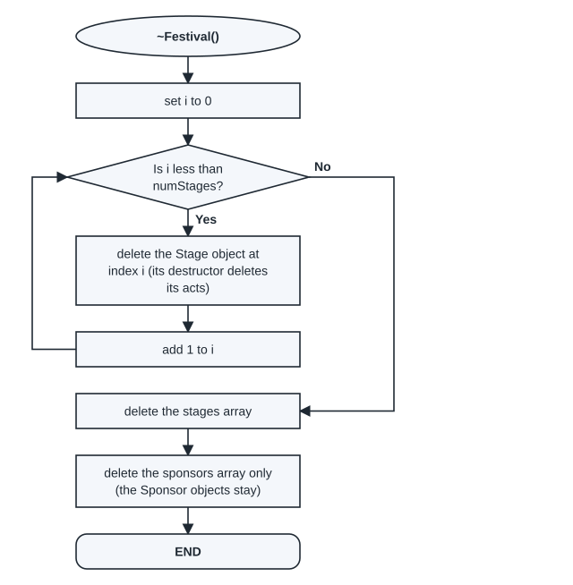
| Condition | True means | False means |
|---|---|---|
i < numStages | stage i exists: delete it | every stage is deleted: delete the arrays |
Take a festival with 2 stages (the main program under Object diagrams, further down, makes one). An instrumented copy of the destructor printed one row per pass of the loop:
| i | Is i less than numStages (2)? | Object deleted | Its acts |
|---|---|---|---|
| 0 | Yes | stages[0] (Main) | 2 |
| 1 | Yes | stages[1] (Tent) | 1 |
| 2 | No | leave the loop: delete the stages array, then the sponsors array | - |
A festival with no stages skips the loop: "Is i less than numStages?" is No at once, so the chart goes straight to "delete the stages array".
Destructor flowchart
- Start ellipse:
~ClassName(). - For each composition array: a loop that deletes the object at index i, then a box that deletes the array.
- For each aggregation array: one box that deletes the array only. Say in the box that the objects stay.
- END.
Assignment operator flowchart (a = b copies b into a, which already exists)
- Start ellipse:
operator=(const ClassName& other). - A diamond: "Is other the same object as this one?" Yes goes straight to the return box. This stops
a = afrom deleting the memory it is about to copy. - Free the old memory, as the destructor does. A predefined process can show this.
- Copy the plain values (the strings and the counts).
- For each composition array: allocate a new array, then loop: make a new copy of each part. This is a deep copy: the copy gets its own objects.
- For each aggregation array: allocate a new array, then loop: copy each pointer. Both objects then share the same parts; for example, two festivals share the same Sponsor objects.
- Return a reference to this object, then END.
The Examples page draws the full Festival operator= flowchart this way (example E1).
A School owns its classrooms (each classroom owns its learners) and shares its teachers. These classes are the Festival classes with new names:

Four shapes of the School operator= flowchart are blank. Write the words for each.
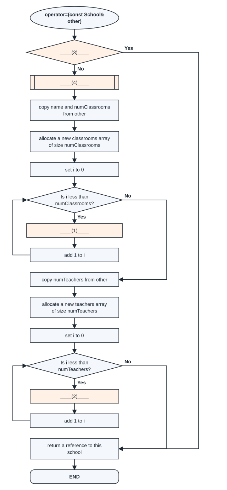
Write your answer before you open it.
- "make a new Classroom that copies other's Classroom at index i, and store it at index i" (composition: deep copy)
- "store other's teacher pointer at index i (the same Teacher object)" (aggregation: copy the pointer)
- "Is other the same object as this school?"
- "free the old memory, as the destructor does"
Draw the flowchart of the School destructor. Use the School class diagram above.
Write this before you open the solution.
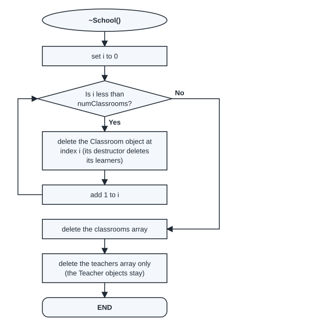
School::~School() {
for (int i = 0; i < numClassrooms; i++)
delete classrooms[i];
delete[] classrooms;
delete[] teachers;
}| Condition | True means | False means |
|---|---|---|
i < numClassrooms | classroom i exists: delete it (its destructor deletes its learners) | every classroom is deleted: delete the two arrays |
Take a school with two classrooms: A1 with one learner and B2 with none. An instrumented copy of the destructor printed one row per pass:
| i | Is i less than numClassrooms (2)? | Object deleted | Its learners |
|---|---|---|---|
| 0 | Yes | classrooms[0] (A1) | 1 |
| 1 | Yes | classrooms[1] (B2) | 0 |
| 2 | No | leave the loop: delete the classrooms array, then the teachers array | - |
Check your destructor chart against ownership. Each wrong chart below was turned into code and checked with valgrind, a tool that reports memory errors while a program runs. It shows what goes wrong.
Assumed
valgrind is not on the lab PCs. In the lab you build in PowerShell with g++ -std=c++98 -Wall -Werror *.cpp -o main and run .\main.exe. You do not need valgrind in the exam; here it only gives each error its name.
| The chart does this | valgrind reports |
|---|---|
| deletes the stages array but not the Stage objects in it | definitely lost: 96 bytes in 2 blocks |
| also deletes each Sponsor (they were not made with new) | Invalid free() / delete / delete[] / realloc() |
in operator=, copies the stage pointers instead of making new stages | Invalid read of size 4Invalid free() / delete / delete[] / realloc()ERROR SUMMARY: 16 errors from 10 contexts (suppressed: 0 from 0) |
Definitely lost means memory from new that nothing points to any more, so it can never be deleted. Invalid free means a delete of memory that new did not give, or that was already deleted. Invalid read means the program read memory that was already deleted.
In the last row two festivals share one Stage. The first destructor deletes that Stage and its Acts. The second destructor reads the same Stage after it was deleted (Invalid read), then deletes the same Stage and Acts again (Invalid free).
Try this
A Library class holds Book** books by aggregation: the books are made in main. What does the Library destructor flowchart contain?
Write your answer before you open it.
One box: "delete the books array only (the Book objects stay)", then END. There is no loop, because Library does not own the books.
Object diagrams
A class diagram shows what every object of a class can hold. An object diagram shows the objects that exist at one moment while the program runs, with the value in each member at that moment.
From Lecture 9, slide 7
Object diagrams show the state of an object at a specific point during runtime. They are derived from the class diagram.
![Two object boxes with five numbered notes. Box stages[0]: Stage with name = "Main", acts = Act[2], numActs = 2. Box acts[0]: Act with name = "Brass Band", minutes = 45, id = 1, and actCount = 3 underlined. Notes: 1. Name compartment: object name, colon, class name, underlined. 2. One slot per member: attr = value, as in code. 3. A pointer to an array shows the type and size. 4. A static member is underlined: one value for the whole class. 5. Array elements are named by their index.](assets/diagrams/od_anatomy_m.svg)
A static member (marked static in the class) is one copy shared by every object of the class, not one copy per object. Note 4 shows it: actCount counts every Act made so far.
From Lecture 9, slide 8
The name section is underlined. Property values are written as they are in code, for example 'A' and "Bob". An array of a primitive type is written {valueA, valueB, valueC}.
From Lecture 9, slide 9
A note box (a rectangle with a folded corner) can explain a part of the diagram.
Assumed
A pointer to a dynamic array is written with its type and size, stages = Stage[2], and each object in it is named by its index, stages[0]: Stage. A static member is underlined in each object of its class. This follows the Lecture 9 activities (the Bank example); no slide states it as a rule.
Read the table from left to right to draw objects from code, and from right to left to write code from a diagram.
| In the code | In the object diagram |
|---|---|
Sponsor radio("Radio Gold", 5000); | a box radio: Sponsor with name = "Radio Gold" and amount = 5000 |
a pointer member that is NULL | the slot = NULL, for example sponsors = NULL |
stages = new Stage*[2]; with two stages in it | the slot stages = Stage[2], and a box for each Stage object |
the object at index 0 of the array stages | a box named stages[0]: Stage |
a static member | an underlined slot with the one shared value |
composition: the owner made the object with new and will delete it | a line with a filled diamond at the owner |
| aggregation: the owner only stores a pointer to an object made elsewhere | a line with a hollow diamond at the owner |
Only the objects that exist at that moment get a box. An object made with new exists until it is deleted. A local object exists until the end of its block.
Code to object diagram. This main program uses the Festival classes shown above, under Flowcharts that follow ownership. The question: draw every object that exists after line 8.
#include <iostream>
#include "Festival.h"
using namespace std;
int main() {
Sponsor radio("Radio Gold", 5000); // line 1
Festival f("Jazz Days"); // line 2
f += new Stage("Main"); // line 3
f += new Stage("Tent"); // line 4
f[0]->addAct(new Act("Brass Band", 45)); // line 5
f[1]->addAct(new Act("Duo", 30)); // line 6
f[0]->addAct(new Act("Choir", 40)); // line 7
f.addSponsor(&radio); // line 8
cout << "Act count: " << Act::getActCount() << endl; // line 9
f.print(); // line 10
return 0;
}| Line | What it adds or changes |
|---|---|
| 1 | the object radio (a Sponsor in main) |
| 2 | the object f with stages = NULL and sponsors = NULL |
| 3 and 4 | stages[0] (Main) and stages[1] (Tent); f now has stages = Stage[2] |
| 5 | "Brass Band" in Main, with id 1 |
| 6 | "Duo" in Tent, with id 2 |
| 7 | "Choir" in Main, with id 3: the ids count every Act made, not the acts on one stage |
| 8 | sponsors[0] points at radio; no new Sponsor is made |
An instrumented copy of the program printed every member after line 8. Each value in the diagram is one of those values:
![Object diagram after line 8. radio: Sponsor (name "Radio Gold", amount 5000) joined by a hollow diamond at f. f: Festival with title "Jazz Days", stages = Stage[2], numStages = 2, sponsors = Sponsor[1], numSponsors = 1. Filled diamonds from f to stages[0]: Stage (name "Main", acts = Act[2], numActs 2) and stages[1]: Stage (name "Tent", acts = Act[1], numActs 1). Filled diamonds from stages[0] to acts[0]: Act (Brass Band, 45, id 1) and acts[1]: Act (Choir, 40, id 3); from stages[1] to acts[0]: Act (Duo, 30, id 2). Every Act box has actCount = 3 underlined.](assets/diagrams/od_fest_8_m.svg)
The program then prints these values, so you can check the diagram against the output:
Act count: 3 Festival Jazz Days, stages: 2, sponsors: 1 Stage Main at index 0/2, acts: 2 Act at index 0: Brass Band (ID=1, 45 min) Act at index 1: Choir (ID=3, 40 min) Stage Tent at index 1/2, acts: 1 Act at index 0: Duo (ID=2, 30 min) Sponsor at index 0/1: Radio Gold (5000)
Object diagram to code. Lecture 9 also asks the other way: write the lines that make a given diagram. This diagram shows the objects after some lines of a main program:
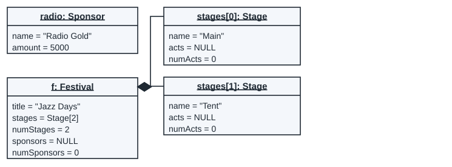
radio: Sponsorwith two values: a Sponsor made with its constructor.f: Festivalwith a title: a Festival made with the title.- Two Stage boxes joined to
fwith filled diamonds: two stages made withnewand given tof. Theiracts = NULLsays that no act was added yet. sponsors = NULL:addSponsorwas not called yet.
These are lines 1 to 4 of the program above:
Sponsor radio("Radio Gold", 5000); // line 1
Festival f("Jazz Days"); // line 2
f += new Stage("Main"); // line 3
f += new Stage("Tent"); // line 4The School classes shown above, under Flowcharts that follow ownership, are used in this program. Teachers are made in main and shared, like the sponsors.
#include <iostream>
#include "School.h"
using namespace std;
int main() {
Teacher mrsDube("Mrs Dube", 12); // line 1
Teacher mrNel("Mr Nel", 3); // line 2
School s("Hillview"); // line 3
s += new Classroom("A1"); // line 4
s[0]->addLearner(new Learner("Thabo", 14)); // line 5
s[0]->addLearner(new Learner("Ana", 13)); // line 6
s += new Classroom("B2"); // line 7
s.addTeacher(&mrsDube); // line 8
s[1]->addLearner(new Learner("Lebo", 15)); // line 9
s.addTeacher(&mrNel); // line 10
cout << "Learner count: " << Learner::getLearnerCount() << endl; // line 11
s.print(); // line 12
return 0;
}After line 6, fill in the five missing values.
| Object box | Slot | Value |
|---|---|---|
s: School | numClassrooms | ____(1)____ |
s: School | teachers | ____(2)____ |
classrooms[0]: Classroom | learners | ____(3)____ |
learners[1]: Learner | id | ____(4)____ |
learners[1]: Learner | learnerCount (underlined) | ____(5)____ |
Write your answer before you open it.
- (1)
numClassroomsofs: School:1 - (2)
teachersofs: School:NULL - (3)
learnersofclassrooms[0]: Classroom:Learner[2] - (4)
idoflearners[1]: Learner:2 - (5)
learnerCount (underlined)oflearners[1]: Learner:2
No teacher was added yet, so teachers is still NULL. The whole diagram after line 6:
![Object diagram after line 6: mrsDube: Teacher and mrNel: Teacher with no links; s: School with one classroom and teachers = NULL; classrooms[0]: Classroom A1 with two learners, Thabo (id 1) and Ana (id 2), learnerCount = 2.](assets/diagrams/od_school_6_m.svg)
In the form of Semester Test 1 (question 24 is on the Practice page): draw the object diagram of every object that exists after line 10 of the School program. Include the static count. Use the output below to check your values.
Learner count: 3 School Hillview, classrooms: 2, teachers: 2 Classroom A1 at index 0/2, learners: 2 Learner at index 0: Thabo (ID=1, 14 years old) Learner at index 1: Ana (ID=2, 13 years old) Classroom B2 at index 1/2, learners: 1 Learner at index 0: Lebo (ID=3, 15 years old) Teacher at index 0/2: Mrs Dube (12) Teacher at index 1/2: Mr Nel (3)
Write this before you open the solution.
![Object diagram after line 10. mrsDube: Teacher (name "Mrs Dube", years 12) and mrNel: Teacher (name "Mr Nel", years 3), each joined to s by a hollow diamond at s. s: School (name "Hillview", classrooms = Classroom[2], numClassrooms 2, teachers = Teacher[2], numTeachers 2). Filled diamonds from s to classrooms[0]: Classroom (A1, learners = Learner[2], 2) and classrooms[1]: Classroom (B2, learners = Learner[1], 1). A1 owns learners[0]: Learner (Thabo, 14, id 1) and learners[1]: Learner (Ana, 13, id 2); B2 owns learners[0]: Learner (Lebo, 15, id 3). Each Learner shows learnerCount = 3 underlined.](assets/diagrams/od_school_10_m.svg)
Lebo was added on line 9, after Mrs Dube was added on line 8, but the order of the lines does not change the boxes. The ids follow the order in which the learners were made.
Check an object diagram with these questions. They cover four kinds of error: notation, object names, swapped relationships and values.
- Does every object that exists at that line have a box, and no other object?
- Is each name section name: Class, underlined, with the object name first?
- Does every value match the code and the output, including the static count?
- Is each owned object joined with a filled diamond at its owner, and each shared object with a hollow diamond?
From Practical 2 specification, section 3.5
Each object diagram goes on its own page of the DrawIO file, and shows the other objects that the code created and how they are linked.
Try this
After line 4 of the School program, how many Learner boxes are there, and what is learnerCount?
Write your answer before you open it.
None, and learnerCount is 0: line 4 adds classroom A1, and the first learner is made on line 5. A static member exists even before any object of its class.
Object diagrams: base-class pointers to derived objects
Semester Test 2 (question 9(c)) and Class Test 3 (question 2) gave an array of base-class pointers, where each pointer points at an object of a derived class (both questions are on the Practice page). A derived class inherits from a base class. Which class name goes in each box?
Each box names the class of the object that was really made with new, not the type of the pointer. An abstract class (a class with a pure virtual function) can never have an object of its own, so it never gets a box. The pointer type still shows in the slot, for example array = Logger[2].
Logger and Reading are abstract. RisingLogger and FallingLogger inherit from Logger; WholeReading and DecimalReading inherit from Reading.
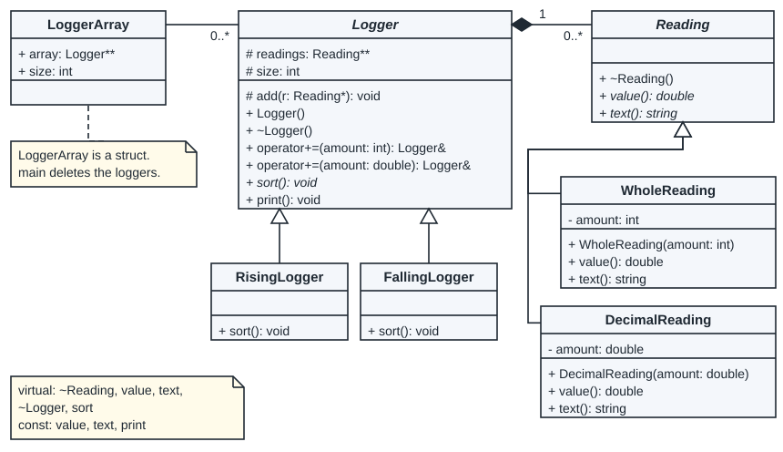
#include "Logger.h"
int main() {
LoggerArray arr; // line 1
arr.size = 2; // line 2
arr.array = new Logger*[arr.size]; // line 3
arr.array[0] = new RisingLogger(); // line 4
arr.array[1] = new FallingLogger(); // line 5
for (int i = 0; i < arr.size; i++) { // line 6
*arr.array[i] += 4; // line 7
*arr.array[i] += 1.5; // line 8
*arr.array[i] += 3; // line 9
arr.array[i]->sort(); // line 10
arr.array[i]->print(); // line 11
} // line 12
for (int i = 0; i < arr.size; i++) // line 13
delete arr.array[i]; // line 14
delete[] arr.array; // line 15
return 0;
}+= 4 calls the int version of operator+=, which makes a WholeReading. += 1.5 calls the double version, which makes a DecimalReading. The program prints:
[1.5,3,4] [4,3,1.5]
Both loops in main count i from 0 while i is less than arr.size (2):
| Condition | True means | False means |
|---|---|---|
i < arr.size | logger i exists: work on it | both loggers are done: leave the loop |
The loop of lines 6 to 12, pass by pass (an instrumented copy printed the readings before the sort; the program prints the line after the sort):
| i | Is i less than 2? | Object at array[i] | Readings before sort() | Line 11 prints |
|---|---|---|---|---|
| 0 | Yes | RisingLogger | WholeReading 4 DecimalReading 1.5 WholeReading 3 | [1.5,3,4] |
| 1 | Yes | FallingLogger | WholeReading 4 DecimalReading 1.5 WholeReading 3 | [4,3,1.5] |
| 2 | No | leave the loop | - | - |
The loop of lines 13 and 14 deletes one logger per pass: i = 0 deletes array[0] (the RisingLogger), i = 1 deletes array[1] (the FallingLogger), and at i = 2 the test is false. Line 15 then deletes the array of pointers.
Assumed
The code comment in LoggerArray says main deletes the loggers. So the link from arr to each logger is drawn as a plain association line, not a diamond.
| Class diagram | Object diagram |
|---|---|
| shows Logger and Reading, in italic | shows no Logger box and no Reading box |
| one inheritance triangle per derived class | no triangles: objects do not inherit from each other |
- readings: Reading** | readings = Reading[3], and one box per reading, named readings[0]: DecimalReading and so on |
After sort(), the RisingLogger keeps the same three Reading objects in a new order. Sorting moves the pointers; each object keeps its class:
| Box | Class | amount |
|---|---|---|
readings[0] | DecimalReading | 1.5 |
readings[1] | WholeReading | 3 |
readings[2] | WholeReading | 4 |
Draw the object diagram of every object after the first loop (line 12): arr, both loggers and all their readings.
Write this before you open the solution.
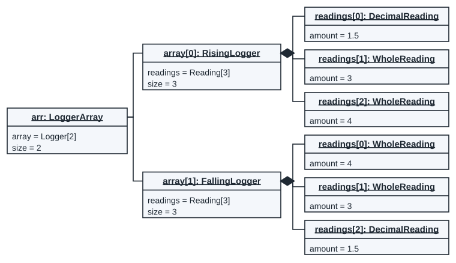
Check: the RisingLogger list reads [1.5,3,4] and the FallingLogger list reads [4,3,1.5], as printed.
From an object diagram and a flowchart to the class
An object diagram shows the members of a class and a value in each. A constructor flowchart shows what the constructor does. Together they give enough to write the class.
From Semester Test 1
Questions 15 and 16 gave an object diagram and a flowchart of the constructor, and asked for the class and the constructor in C++ (both questions are on the Practice page).
A type is not written in an object box, so you read it from the value.
| Value in the box | Member type in the class |
|---|---|
"Soup" | string |
3 | int |
0.14f | float |
1.5 | double |
'A' | char |
Stage[2] with Stage boxes joined to it | Stage**: a dynamic array of pointers to Stage objects |
{"Chop", "Boil", "Serve"} | a dynamic array of strings, string* (when its size comes from the constructor) |
NULL | a pointer |
| an underlined slot | a static member |
From the flowchart: each diamond becomes an if or a loop condition, and each process box one statement.
Object diagram and flowchart to class. A Recipe object and the flowchart of its constructor:
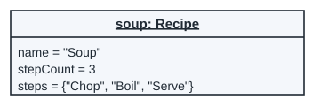
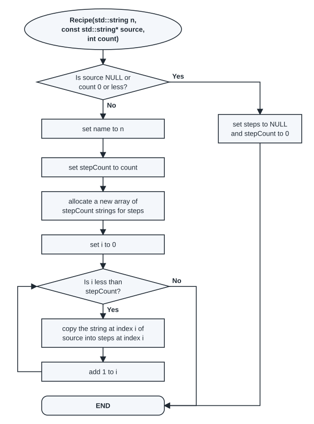
- The slots give three members:
name(a string),stepCount(an int) andsteps(a list of strings). - The flowchart allocates "a new array of stepCount strings", so
stepsis astring*. - The start ellipse gives the constructor and its parameter list:
Recipe(std::string n, const std::string* source, int count).
#ifndef RECIPE_H
#define RECIPE_H
#include <string>
class Recipe {
public:
Recipe(std::string n, const std::string* source, int count);
~Recipe();
private:
std::string name;
int stepCount;
std::string* steps;
};
#endifThe class also needs a destructor: the constructor uses new, so something must use delete[]. Each shape gives one line of the constructor:
Recipe::Recipe(std::string n, const std::string* source, int count) {
if (source == NULL || count <= 0) {
steps = NULL;
stepCount = 0;
return;
}
name = n;
stepCount = count;
steps = new std::string[stepCount];
for (int i = 0; i < stepCount; i++)
steps[i] = source[i];
}| Condition | True means | False means |
|---|---|---|
source == NULL || count <= 0 | nothing to copy: an empty recipe | copy the steps |
i < stepCount | step i is not copied yet | all steps are copied |
For soup (3 steps) the loop runs three times. Each row shows steps[i] after the pass, as an instrumented copy printed it:
| i | Is i less than stepCount (3)? | steps[i] after the pass |
|---|---|---|
| 0 | Yes | "Chop" |
| 1 | Yes | "Boil" |
| 2 | Yes | "Serve" |
| 3 | No | leave the loop: END |
Assumed
This constructor sets steps to NULL and stepCount to 0 when a parameter is invalid, so that the destructor's delete[] steps; is safe (delete[] on NULL does nothing). Semester Test 1 question 16 said instead: do no initialisation if a parameter is invalid. In a test, follow the wording of the question.
Class to object diagram. The main program makes two recipes:
#include <string>
#include "Recipe.h"
int main() {
std::string method[3] = {"Chop", "Boil", "Serve"};
Recipe soup("Soup", method, 3);
Recipe broken("Toast", NULL, 2);
return 0;
}For broken, source is NULL, so the flowchart takes the Yes exit. That path never sets the name. An instrumented copy printed the members:
| Slot | Value |
|---|---|
name | "" |
stepCount | 0 |
steps | NULL |
A string member that is never set is empty, "". So the box is broken: Recipe with name = "", stepCount = 0 and steps = NULL.
In the School program under Object diagrams, above, the first classroom box after line 10 is classrooms[0]: Classroom with these slots, and 2 Learner boxes are joined to it with filled diamonds:
| Slot | Value |
|---|---|
name | "A1" |
learners | Learner[2] |
numLearners | 2 |
Fill the three member gaps of the class.
class Classroom {
private:
____(1)____
____(2)____
____(3)____
public:
Classroom(std::string name);
Classroom(const Classroom& other);
~Classroom();
void addLearner(Learner* learner);
Learner* operator[](int index) const;
std::string getName() const;
int getNumLearners() const;
};Write your answer before you open it.
std::string name;Learner** learners;int numLearners;
Learner[2] with Learner boxes joined to it means an array of pointers to Learner objects: Learner**.
Write the class Learner (from class to };) and its constructor. In the School program after line 10, the first Learner box is learners[0]: Learner with these slots (the last one is underlined):
| Slot | Value |
|---|---|
name | "Thabo" |
age | 14 |
id | 1 |
learnerCount (underlined) | 3 |
Use these slots and this constructor flowchart. Add a get function for each member, and a static one for the count.
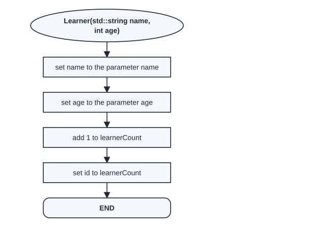
Write this before you open the solution.
#ifndef LEARNER_H
#define LEARNER_H
#include <string>
class Learner {
private:
std::string name;
int age;
int id;
static int learnerCount;
public:
Learner(std::string name, int age);
std::string getName() const;
int getAge() const;
int getId() const;
static int getLearnerCount();
};
#endifLearner::Learner(std::string name, int age) : name(name), age(age) {
learnerCount++;
id = learnerCount;
}The static member is defined once in Learner.cpp:
int Learner::learnerCount = 0;An instrumented copy of the constructor, used to make two learners, printed: learner Thabo gets id 1; learner Ana gets id 2.
Check the class against the diagram: one member per slot, a type that fits each value, static for each underlined slot, and a constructor whose steps match the flowchart one by one. Then make the object from the diagram with your constructor and print its members.
Try this
An object box shows price = 12.5f and codes = {4, 7} (always two codes). Which member types fit?
Write your answer before you open it.
float price; (the f marks a float) and int codes[2]; (a fixed array of two ints).
Memory diagrams
A memory diagram shows where each variable lives and what each pointer points at. A pointer holds the address of an object, and the diagram draws it as an arrow to that object. NULL means the pointer points at nothing.
Memory has two parts. The stack holds the local variables of each function that is running, for example ll in main. The heap holds the objects made with new. They stay there until delete removes them.
From the exam notice
The DrawIO part of the theory exam includes memory diagrams.
Assumed
No extra examples of memory diagrams were published after the notice. The pictures here follow Lectures 21 to 25: the stack on one side and the heap on the other, each node as a box with its members, and an arrow for each pointer. Here each member is a cell with its name on top; a dot in a cell is the start of its arrow.
Lecture 23 draws the same list as an object diagram, without the stack and without arrows. There each link line stands for a next pointer, so the next slot is written only when it is NULL:
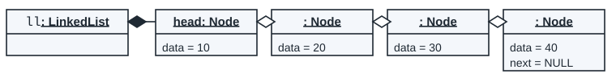
From Lecture 23, slides 3 and 4
The nodes of a list are joined with hollow diamonds, and the first node is named head.
This clashes with sections 2 and 3, where a hollow diamond means that the owner does not delete the object: the list does delete its nodes.
The LinkedList class keeps one pointer, head, to the first Node. Each Node holds data and next, a pointer to the next node.
class Node {
private:
int data;
Node* next;
public:
Node(int data);
int& getData();
Node*& getNext();
};class LinkedList {
private:
Node* head;
public:
LinkedList();
~LinkedList();
LinkedList& operator+=(int value);
void addFront(int value);
void remove(int value);
void print() const;
};#include "LinkedList.h"
int main() {
LinkedList ll; // line 1
for (int i = 1; i <= 4; i++) // line 2
ll += i * 10; // line 3
ll.print(); // line 4
ll.remove(20); // line 5
ll.print(); // line 6
ll.addFront(5); // line 7
ll.print(); // line 8
return 0;
}+= adds a new node at the end. A run of the program printed the list after each pass of the loop:
| Pass (i) | Value added | head points at | The list from head |
|---|---|---|---|
| 1 | 10 | node 10 | 10 → NULL |
| 2 | 20 | node 10 | 10 → 20 → NULL |
| 3 | 30 | node 10 | 10 → 20 → 30 → NULL |
| 4 | 40 | node 10 | 10 → 20 → 30 → 40 → NULL |
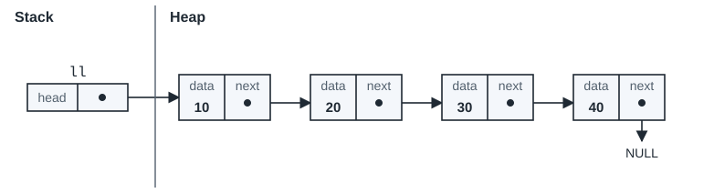
Line 4 prints the list by following the arrows from head:
10 -> 20 -> 30 -> 40 -> NULL
How to draw a memory diagram
- Draw a line between the stack and the heap.
- On the stack, draw each variable of main (and of any function that is running), with one cell for each pointer member.
- On the heap, draw one box for each object made with
newand not yet deleted, with one cell per member. - Write each value. For each pointer, draw an arrow to the object it points at, or to the word NULL.
- Follow the arrows from the stack and compare the order with what the program prints.
The steps inside a function. Line 5 calls ll.remove(20). The function moves prev along the list until the next node holds the value:
void LinkedList::remove(int value) {
if (head == NULL)
return;
if (head->getData() == value) {
Node* temp = head;
head = head->getNext();
delete temp;
return;
}
Node* prev = head;
while (prev->getNext() != NULL && prev->getNext()->getData() != value)
prev = prev->getNext();
if (prev->getNext() == NULL)
return;
Node* temp = prev->getNext();
prev->getNext() = temp->getNext();
delete temp;
}| Condition | True means | False means |
|---|---|---|
head == NULL | the list is empty: nothing to remove | look at the nodes |
head->getData() == value | the first node holds the value: move head on and delete it | search after the first node |
prev->getNext() != NULL && prev->getNext()->getData() != value | the next node is not the one: move prev on | stop: the next node holds the value, or there is none |
prev->getNext() == NULL | the value is not in the list | the next node is the one to remove |
Here the head holds 10, not 20. prev starts at node 10, and the node after it holds 20, so the while condition is false at once: the loop runs 0 times. temp gets node 20. A run of the program printed memory at the two steps:


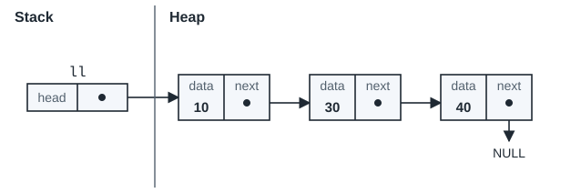
When the loop runs. Take the list 10, 20, 30, 40 and call ll.remove(40). A run of the program printed prev each time the while condition is checked:
| Check | prev points at | What prev->next holds | Is the condition true? | What happens |
|---|---|---|---|---|
| 1 | node 10 | node 20 | Yes: prev->next is not NULL and does not hold 40 | prev moves on to node 20 |
| 2 | node 20 | node 30 | Yes: prev->next is not NULL and does not hold 40 | prev moves on to node 30 |
| 3 | node 30 | node 40 | No: prev->next holds 40 | leave the loop |
temp gets node 40, the last node. The relink line copies its next, which is NULL, into the next of node 30, so node 30 becomes the last node. The program then prints:
10 -> 20 -> 30 -> NULL
The order of the last two lines matters. If delete temp; comes first, the next line reads temp->getNext() from a node that was already deleted. valgrind reports:
Invalid read of size 8
A doubly linked list (Lecture 24) has head and tail, and each node has a prev pointer back to the node before it as well as next.
class DNode {
private:
int data;
DNode* next;
DNode* prev;
public:
DNode(int data);
int& getData();
DNode*& getNext();
DNode*& getPrev();
};#include "DLL.h"
int main() {
DLL dl; // line 1
for (int i = 1; i <= 3; i++) // line 2
dl += i * 5; // line 3
dl.print(); // line 4
dl.printBackwards(); // line 5
dl.removeFront(); // line 6
dl.print(); // line 7
return 0;
}The loop of lines 2 and 3 adds one node at the end per pass:
| i | Is i 3 or less? | Value added (i * 5) |
|---|---|---|
| 1 | Yes | 5 |
| 2 | Yes | 10 |
| 3 | Yes | 15 |
| 4 | No | leave the loop |
After the loop, where does each numbered pointer point? Write "node 5", "node 10", "node 15" or NULL for (1) to (8).
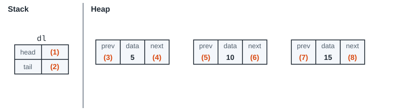
Write your answer before you open it.
| Blank | Pointer | Points at |
|---|---|---|
| (1) | dl.head | node 5 |
| (2) | dl.tail | node 15 |
| (3) | prev of node 5 | NULL |
| (4) | next of node 5 | node 10 |
| (5) | prev of node 10 | node 5 |
| (6) | next of node 10 | node 15 |
| (7) | prev of node 15 | node 10 |
| (8) | next of node 15 | NULL |

Check: following next from head and prev from tail gives the two lines the program prints:
5 10 15 15 10 5
Line 7 of the singly linked list program calls ll.addFront(5). Draw the memory diagram after line 7.
void LinkedList::addFront(int value) {
Node* node = new Node(value);
node->getNext() = head;
head = node;
}Write this before you open the solution.
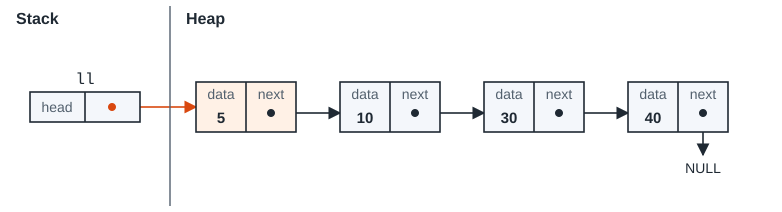
The order of the two lines matters: the new node takes the old head as its next first, and only then does head move to the new node. Line 8 prints:
5 -> 10 -> 30 -> 40 -> NULL
Check a memory diagram with three questions:
- Does every pointer member have exactly one arrow (or NULL)?
- Following
nextfromhead, do you reach the values in the printed order? - Is there a box for each object made with
newthat was not yet deleted, and no box for a deleted one?
A circular list (Lecture 25) keeps only tail, and the next of the last node points back to the first node instead of to NULL:
CircularList cl; // line 1
for (int i = 1; i <= 3; i++) // line 2
cl += i * 100; // line 3
cl.print(); // line 4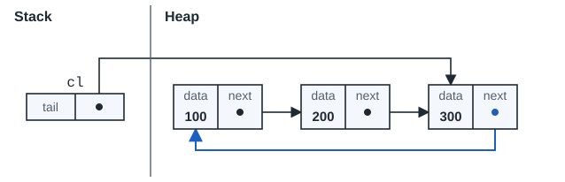
A run of the program printed memory after each pass of the loop:
| i | Value added | tail points at | next of the new node | next of node 100 |
|---|---|---|---|---|
| 1 | 100 | node 100 | node 100 | node 100 |
| 2 | 200 | node 200 | node 100 | node 200 |
| 3 | 300 | node 300 | node 100 | node 200 |
Try this
In the circular list, which node does tail->getNext() give, and why does the print start with that value?
Write your answer before you open it.
Node 100, the first node: the last node's next goes back to it. The print starts there and stops when it is back at the start. The program prints:
100 200 300